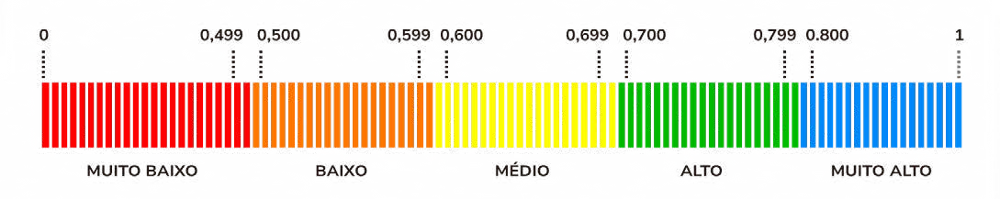
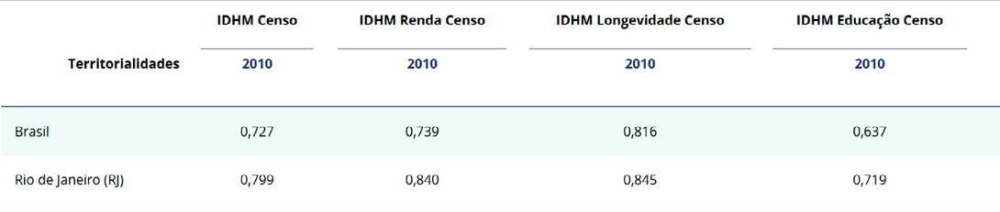
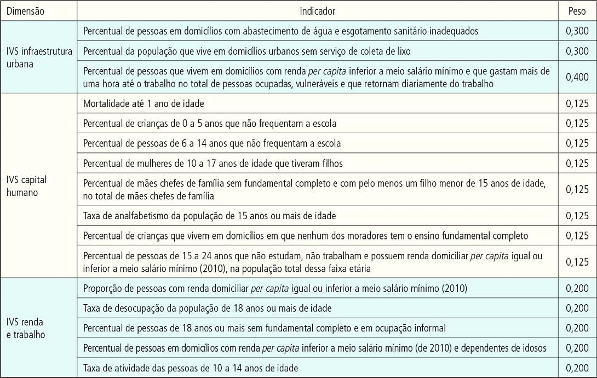
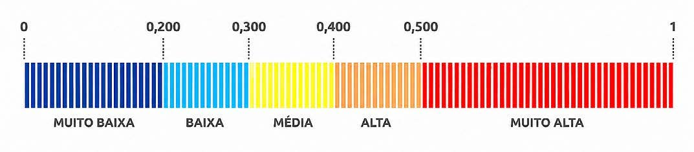
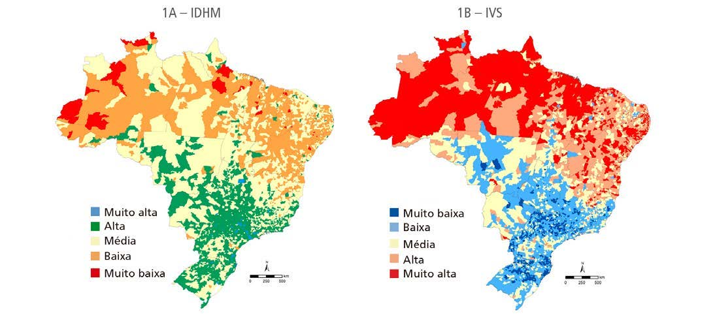

Módulo 2 | Aula 3
Índices: conceitos, construção e usos
Como construir um índice?
O guia para construção de indicadores compostos da Organização para a Cooperação e Desenvolvimento Econômico (OCDE) define uma sequência de 10 etapas para a construção de um índice, que vão desde o desenvolvimento do quadro teórico até a disseminação dos resultados. São elas:
É o ponto de partida, onde se define o fenômeno social a ser medido e seus subcomponentes. Serve de base para a seleção de variáveis e pesos, garantindo que o indicador tenha uma fundamentação sólida e seja adequado ao seu propósito.
Os indicadores individuais devem ser escolhidos com base na sua solidez analítica, mensurabilidade, relevância e cobertura. Deve-se verificar a qualidade dos dados disponíveis e documentar as suas potencialidades e limitações.
Para obter um conjunto de dados completo, às vezes é necessário estimar os valores ausentes. Isso pode ser feito através de variados métodos de imputação, sendo crucial analisar o impacto dessas estimativas no resultado final.
Serve para investigar a estrutura estatística do conjunto de dados e avaliar se os indicadores selecionados descrevem bem o fenômeno. Técnicas como a análise de componentes principais (PCA) ajudam a identificar grupos de indicadores semelhantes e a guiar escolhas metodológicas posteriores.
Como os indicadores costumam ter unidades de medida diferentes, a normalização é necessária para torná-los comparáveis, garantindo a coerência. Métodos comuns incluem o ranking, a padronização (z-scores) e o método Min-Max.
Os indicadores são combinados seguindo o quadro teórico estabelecido. É nesta fase que se decide o peso de cada componente e o método de agregação (como o linear ou geométrico), considerando se um bom desempenho numa dimensão pode compensar falhas em outra. Essa fase pode afetar a interpretabilidade do indicador.
Avalia como as escolhas feitas nas etapas anteriores (normalização, pesos, agregação) afetam as classificações finais das diferentes unidades de análise (como municípios ou países). Ajuda a garantir a transparência e a credibilidade do indicador.
O indicador composto deve ser decomposto para identificar o que define o desempenho de cada unidade de análise.
Tenta-se correlacionar o novo indicador composto com outras medidas conhecidas (como o PIB per capita, por exemplo) para testar o seu poder explicativo e desenvolver narrativas baseadas nos dados.
Os resultados devem ser apresentados de forma clara, acessível e precisa, utilizando ferramentas como tabelas e gráficos.
A qualidade do índice resultante desse processo irá depender de dois pilares: i) da qualidade dos indicadores individuais que o compõem, e ii) da qualidade nos procedimentos de construção e disseminação. O primeiro pilar foi abordado quando aprofundamos os atributos desejáveis dos indicadores. O segundo refere-se à necessidade de uma metodologia tecnicamente rigorosa e transparente ao longo de todas as etapas de construção.
Exemplos de índices
A seguir, abordaremos a construção e interpretação de dois índices amplamente divulgados: o Índice de Desenvolvimento Humano (IDH) e o Índice de Vulnerabilidade Social.
O Índice de Desenvolvimento Humano (IDH)
O IDH é um índice amplamente conhecido e utilizado internacionalmente. Foi criado em 1990, como um contraponto ao uso do indicador Produto Interno Bruto (PIB) per capita como indicador de desenvolvimento, pois este considera apenas a dimensão econômica do desenvolvimento. Baseado em um conceito de desenvolvimento centrado nas escolhas e bem-estar das pessoas, o IDH apresenta uma visão mais abrangente do bem-estar, por considerar não apenas fatores econômicos, mas também sociais. É uma medida calculada a partir de três dimensões básicas do desenvolvimento humano: saúde, educação e renda.
Posteriormente, essa metodologia foi adequada ao contexto brasileiro e à disponibilidade de indicadores para avaliar o desenvolvimento dos municípios e regiões metropolitanas brasileiras, resultando no IDHM brasileiro, que é composto pelas mesmas três dimensões do IDH Global (PNUD, 2013). Os resultados do IDHM e dos indicadores que o compõem estão disponíveis na página do Atlas do Desenvolvimento Humano.
Assista ao vídeo para conhecer mais sobre o IDHM e as ferramentas disponíveis no Atlas do Desenvolvimento Humano.
Link do vídeo a ser inserido.
Visite também o Painel IDHM do PNUD.
O IDHM utiliza quatro indicadores referentes às três dimensões analisadas. São eles: expectativa de vida ao nascer, escolaridade da população adulta, fluxo escolar da população jovem e renda per capita. É calculada a média geométrica das três dimensões para se chegar ao índice final.
O resultado do IDHM varia de 0 a 1; e quanto mais próximo a 1, maior o desenvolvimento humano. São cinco faixas de desenvolvimento humano: muito baixo (0-0,499), baixo (0,500-0,599), médio (0,600-0,699), alto (0,700-0,799) e muito alto (0,800-1). Veja na figura abaixo como ler o índice:
Figura 2 – Como ler o IDHM.

Fonte: Elaborado a partir de PNUD, 2013.
Na tabela abaixo, temos o resultado do IDHM 2010 para o Brasil e o município do Rio de Janeiro (RJ). Ambos estão na faixa de alto desenvolvimento humano. Podemos verificar, contudo, que o desenvolvimento humano do país, no que se refere à dimensão Educação, é médio. O município do Rio de Janeiro também apresentou o menor resultado nessa dimensão.
Figura 3 – IDHM 2010, Brasil e Rio de Janeiro (RJ).

Fonte: Atlas do Desenvolvimento Humano. Consulta em 22 de fevereiro de 2026.
Agora consulte o Atlas do Desenvolvimento Humano e veja o resultado do IDHM e de suas subdimensões para o seu município de residência. O desenvolvimento humano de seu município está em qual faixa? Qual dimensão está mais desenvolvida? E qual está menos?
O Índice de Vulnerabilidade Social (IVS)
Outro índice bastante conhecido é o IVS, elaborado pelo Instituto de Pesquisa Econômica Aplicada (Ipea) e instituições parceiras. O IVS é obtido pelo cálculo da média aritmética dos subíndices: IVS Infraestrutura Urbana, IVS Capital Humano e IVS Renda e Trabalho, cada um deles com o mesmo peso.
No quadro a seguir, são apresentados os indicadores que compõem os subíndices e seus respectivos pesos:
Figura 4 – Indicadores que compõem os subíndices do IVS e pesos.

Fonte: Ipea, 2018, p. 25.
Assim como o IDH, os resultados do IVS são expressos em uma escala de 0 a 1 com três casas decimais, classificados também em cinco faixas correspondentes a graus de vulnerabilidade. Contudo, em um sentido de interpretação inverso: quanto mais próximo de 1, maior a vulnerabilidade social.
Figura 5 – Como ler o IVS.

Fonte: Elaborado a partir de Ipea, Atlas da Vulnerabilidade Social.
Na figura a seguir, podemos ver comparativamente os municípios brasileiros segundo desenvolvimento humano (IDHM) e vulnerabilidade social (IVS).
Figura 8 – Municípios segundo faixas do IDHM e do IVS, 2010.

Fonte: Ipea, 2018, p. 31.
Acesse também a plataforma do Atlas da Vulnerabilidade Social para consultar o Índice de Vulnerabilidade Social do seu município e comparar os resultados com o IDHM.